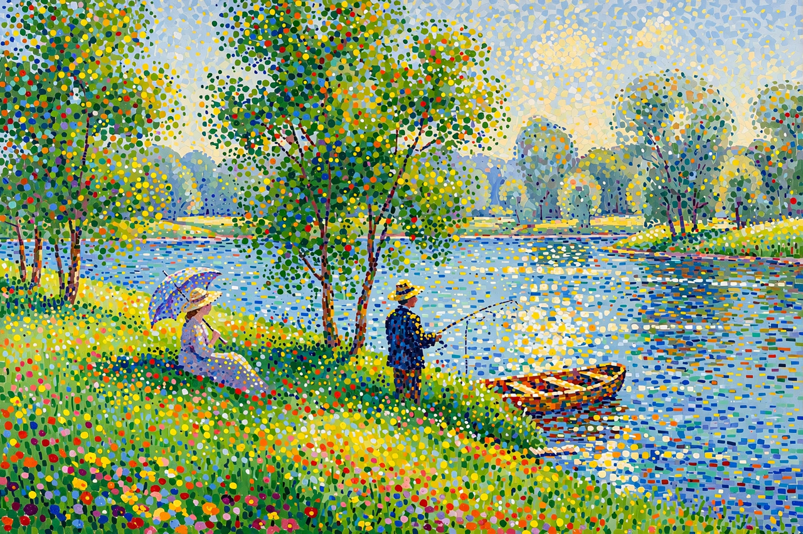

Neo-Impressionism is an art movement founded in 1886 by the French artist Georges Seurat. Seurat's most renowned work, A Sunday Afternoon on the Island of La Grande Jatte (1884–1886), marked the beginning of the movement when it first appeared at an exhibition of the Société des Artistes Indépendants in Paris. The term was coined by the critic Félix Fénéon in 1886 to distinguish the younger painters' systematic method from the more intuitive practice of the original Impressionists.
| Neo-Impressionism | |
|---|---|
 A Neo-Impressionist canvas composed of divided touches of pure colour. | |
| Years active | 1886 – c. 1910s |
| Country | France, Belgium |
| Major figures | Georges Seurat, Paul Signac, Camille Pissarro, Maximilien Luce, Henri-Edmond Cross |
| Influences | Impressionism, colour theory of Chevreul and Rood |
The Neo-Impressionists sought to replace the spontaneous, instinctive brushwork of Impressionism with a method grounded in the contemporary science of optics and colour perception, drawing on Michel Eugène Chevreul's law of simultaneous contrast and Ogden Rood's colour theory. Painters applied small, distinct strokes or dots of unmixed pigment side by side — a method variously called chromoluminarism, divisionism, or, in its dotted form, pointillism — so that the colours would fuse in the viewer's eye ("optical mixture") and achieve greater luminosity than pigment mixed on the palette.
Seurat developed the technique in the early 1880s, exhibiting the monumental Bathers at Asnières in 1884 and La Grande Jatte in 1886. Paul Signac became his closest collaborator and, after Seurat's early death in 1891, the movement's spokesman; Signac's treatise D'Eugène Delacroix au Néo-Impressionnisme (1899) codified its principles. The elder Impressionist Camille Pissarro adopted the method between about 1885 and 1890 before abandoning it as too laborious. Other adherents included Henri-Edmond Cross, Maximilien Luce, Théo van Rysselberghe, and, briefly, the young Henri Matisse.
Many Neo-Impressionists held anarchist sympathies, and their serene, harmonious images of leisure have been read as utopian visions of a future ordered society. The movement's rigorous approach to colour and form influenced Fauvism, early abstraction, and later schools of systematic painting, and it remains one of the most recognisably "scientific" episodes in the history of modern art.